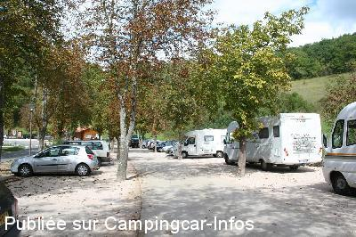
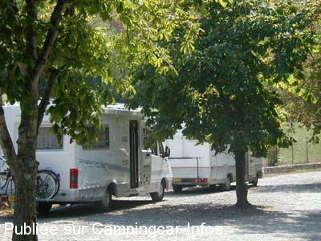

APN = Parking toléré jour/nuit de :
LE MAS D'AZIL
(N° 435)
Accès/adresse :
D119
09290 LE MAS D'AZIL
09290 LE MAS D'AZIL
Latitude : (Nord) 43.06735° Décimaux ou 43° 4′ 2′′
Longitude : (Est) 1.3557° Décimaux ou 1° 21′ 20′′
Tarif : Gratuit
Services :
Autres informations :
Tel Office du Tourisme : +33(0)561 699 990
http://www.tourisme-arize-leze.com

Le 05/10/2015 par jean luc M

Le 02/09/2003 par Iréne
de
Jean Luc M
le 05/10/2015 :
10/09/2015
Passé nuit sur parking de la grotte. Le soir un peu de circulation mais après on entend que la rivière proche.
La journée beaucoup de voitures stationnées d'où problème pour les c. car de grande longueur . Le soir plus personne. A noter qu'il y a 3 parkings possible dans le village de l'autre coté de la grotte.
10/09/2015
Passé nuit sur parking de la grotte. Le soir un peu de circulation mais après on entend que la rivière proche.
La journée beaucoup de voitures stationnées d'où problème pour les c. car de grande longueur . Le soir plus personne. A noter qu'il y a 3 parkings possible dans le village de l'autre coté de la grotte.
de
chantal et jack
le 24/02/2012 :
découverte de ce village d'ariége avec une grotte à visiter sans faute, mais l'on a découvert aussi au 31 grande rue l'atelier de mosaique de Feldine , poussez la porte et sonnez , du beau travail pour une débutante qui mérite un coup de pouce
www.feldine-mosaique.com
cours de mosaique, stage bref il faut discuter avec delphine 0618011338
le stationnement sur la place est bien agréable aussi , calme et les maisons à colombage un régal pour les yeux
découverte de ce village d'ariége avec une grotte à visiter sans faute, mais l'on a découvert aussi au 31 grande rue l'atelier de mosaique de Feldine , poussez la porte et sonnez , du beau travail pour une débutante qui mérite un coup de pouce
www.feldine-mosaique.com
cours de mosaique, stage bref il faut discuter avec delphine 0618011338
le stationnement sur la place est bien agréable aussi , calme et les maisons à colombage un régal pour les yeux
de
Sophie henry
le 27/10/2005 :
En fait, les CCaristes sont priés d'aller passer la nuit sur une place au village et non sur ce parking.
L'endroit est effectivement à ne pas manquer si vous passez dans la région !
En fait, les CCaristes sont priés d'aller passer la nuit sur une place au village et non sur ce parking.
L'endroit est effectivement à ne pas manquer si vous passez dans la région !
de
le 22/08/2002 :
Parking très calme. Endroit magique, la grotte se traverse en camping-car ! Il y a un restaurant à l'entrée de la ville (on y mange très bien).
Parking très calme. Endroit magique, la grotte se traverse en camping-car ! Il y a un restaurant à l'entrée de la ville (on y mange très bien).